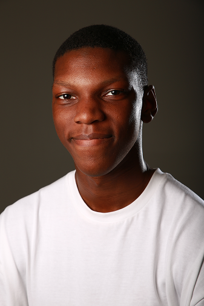
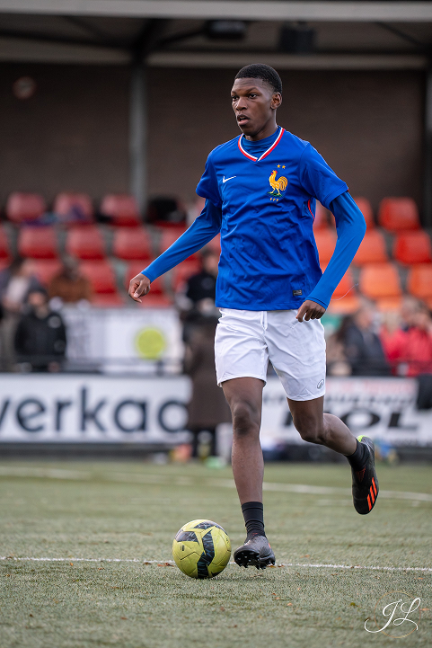

SUR CETTE PAGE
Je m'appelle Jannie, j'ai 18 ans et je suis un de vos étudiants de BUT Informatique. Je suis actuellement à la recherche d'un stage de trois mois et j'espère pouvoir collaborer avec vous !
Téléchargez mon cv ici !
MON PARCOURS
2020
En troisième, je découvre Scratch, ce qui m'introduit au développement et attise ma curiosité.
2021
Je commence à me former au développement Web en commençant par HTML, CSS et quelques notions de JavaScript.
2022-2024
Avec la spécialité NSI au lycée, je renforce ma compréhension du développement, particulièrement en Python.
septembre 2024
Suite à l'obtention de mon baccalauréat, j'intègre l'Université Paris-Saclay où j'effectue les deux premières années de mon BUT Informatique (parcours Réalisation d'applications).
Juin-août 2026
J'occupe de juin à août le poste de développeur chez EcotechInfo, où je développe une application web de gestion de stock.
2026-2027
Pour des raisons personnelles, je poursuis actuellement ma dernière année de BUT à l'Université Paris-Est Créteil où je suis actuellement en BUT Informatique (parcours Réalisation d'applications).
UN PEU PLUS SUR MOI...

En plus de l'informatique, je suis également passionné de sports, notamment de football.
J'ai eu la chance de participer à plusieurs tournois amicaux comme compétitifs, et même à plusieurs compétitions internationales !
Pour autant j'essaie de me diversifier en pratiquant d'autres sports comme le basket, le tennis ou la course à pied pour ne citer qu'eux.
J'aime aussi apprendre des langues, même si j'y consacre un peu moins de temps.
Un mot d'ordre : la découverte ! (et l'apprentissage, mais ça fait deux...)
MES PROJETS IT

yumeton
L'objectif de ce projet était de créer un site de divertissement fictif et j'ai choisi de construire un site de création artistique.

pro-des-notes
Ce site, associé à une application développée en Java Swing permet de constituer les classes pour un semestre automatiquement.

Jsp encore
Pour noter et comprendre les mots de vocabulaire qui échappent à notre compréhension, peu importe la langue.
MON PROJET PERSONNEL
Actuellement en BUT3 Informatique à l'Université Paris-Est Créteil sur le site de Fontainebleau, je suis à la recherche d'une alternance. Ce choix a un lien direct avec mon projet professionnel puisque j'aimerais, à la suite de l'obtention de mon diplôme, entrer dans le monde du travail.
Bien qu'à court terme le salariat semble être la solution la plus raisonnable, l'objectif à long terme serait tout de même de me lancer à mon compte ! Cela me permettra d'avoir plus de liberté tout en n'empêchant aucune collaboration avec des entreprises dont j'aurais croisé le chemin plus tôt dans ma carrière.